Sobre nosaltres

Restaurant els Coberts és un espai gastronòmic inspirat en els grans locals de Barcelona, on es combinen diferents estils de cuina en un mateix entorn. Oferim una experiència variada amb productes de qualitat i elaboracions cuidades, pensades per compartir i gaudir.
El nostre local destaca per la seva amplitud i ambient acollidor, amb una estètica elegant que recorda als espais històrics restaurats. Aquí podràs trobar des de tapes fins a plats de carn i peix, tot en un ambient viu i dinàmic.

Espais gastronòmics
Propostes
Taperia i plats per compartir
Una selecció de tapes i plats típics de la cuina mediterrània, ideals per compartir. Sabors tradicionals amb un toc actual, pensats per gaudir en grup.
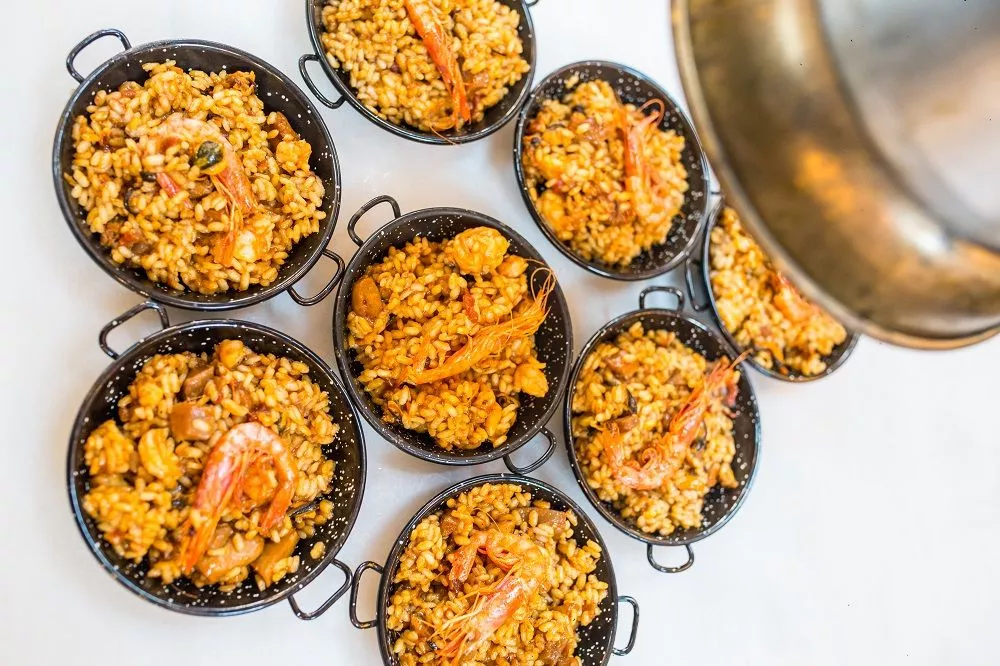
Pasta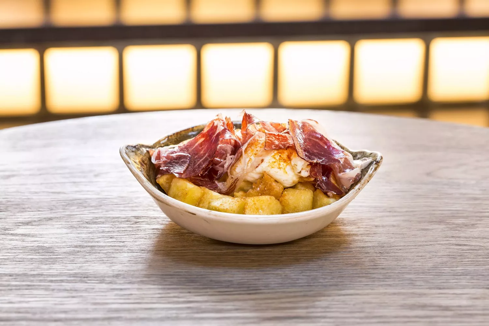
EntrantsBrasa, peix i producte fresc
Propostes centrades en el producte de qualitat: carns a la brasa, peixos frescos i opcions lleugeres. Una oferta variada per a tots els gustos.
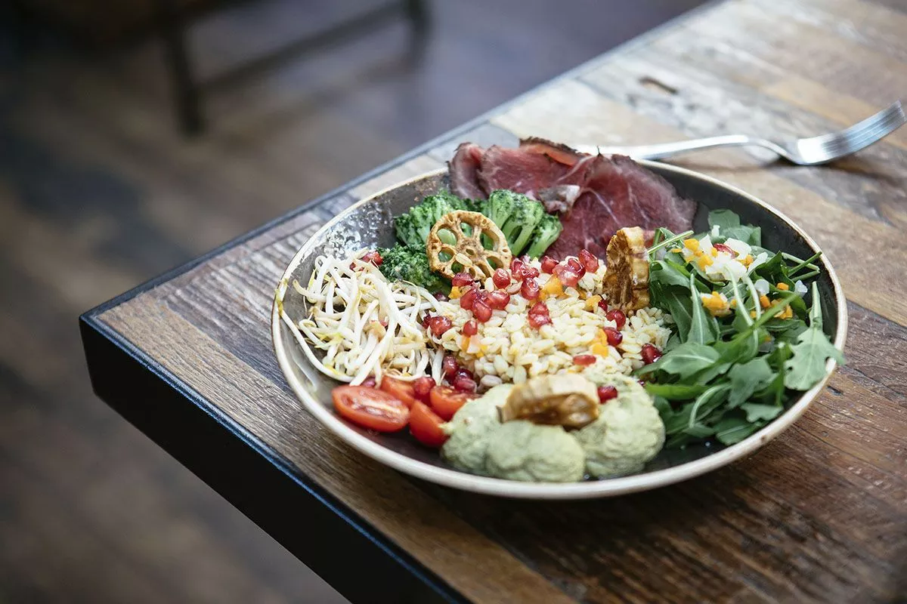
Amanida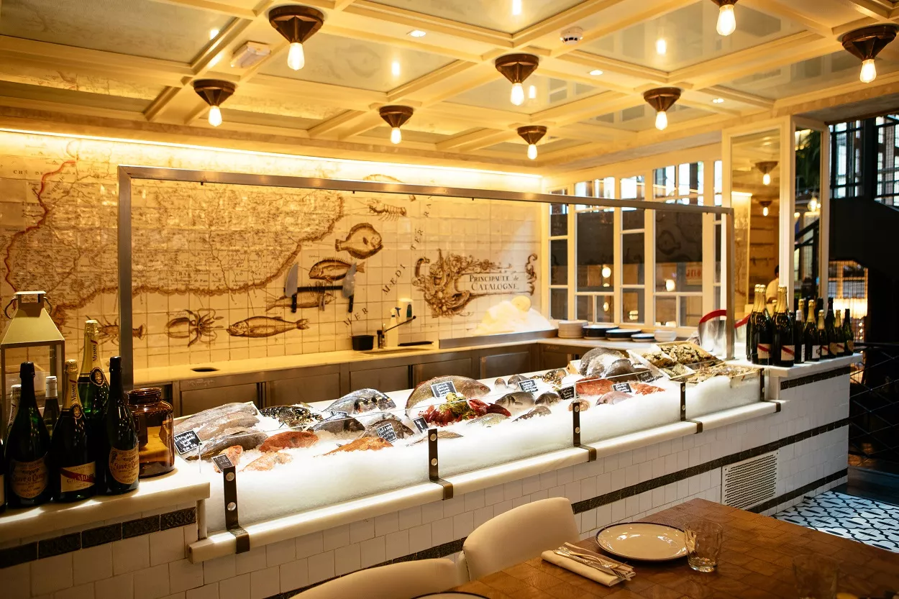
PeixGaleria d'imatges
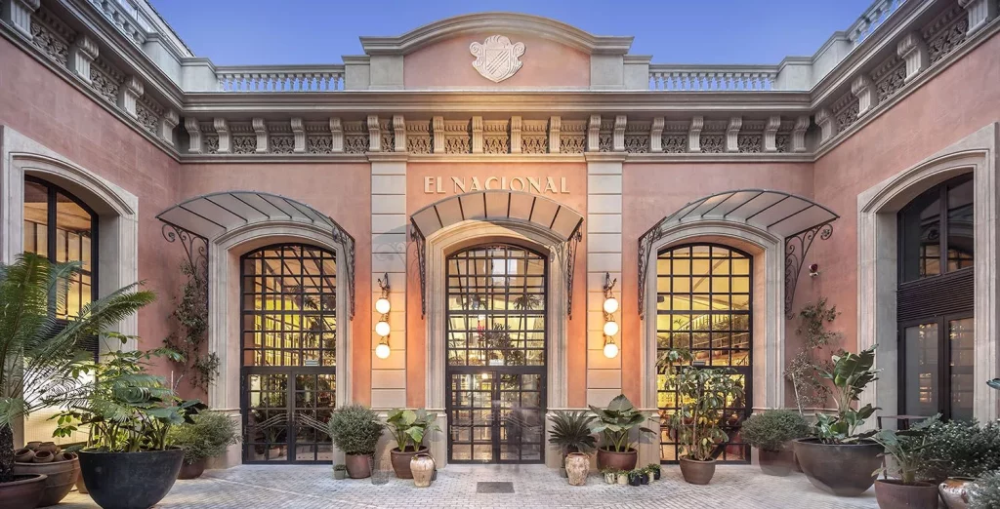
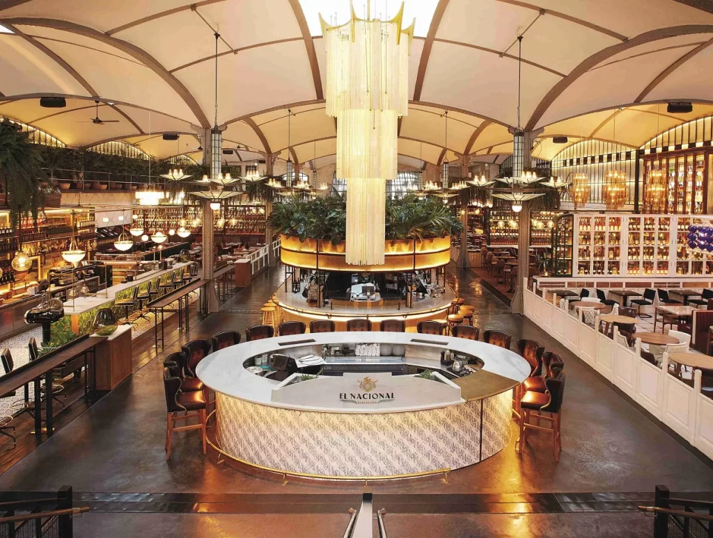
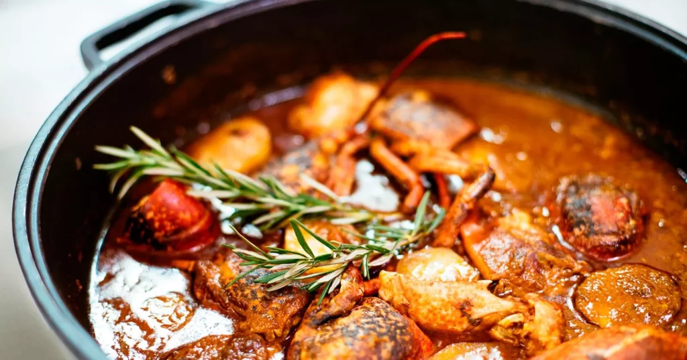

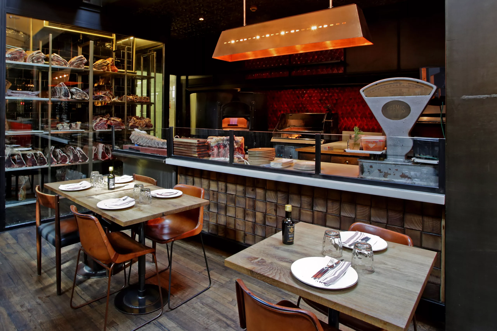
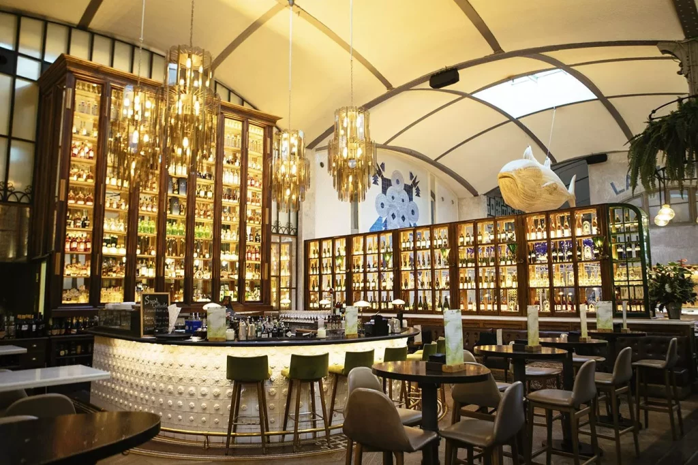
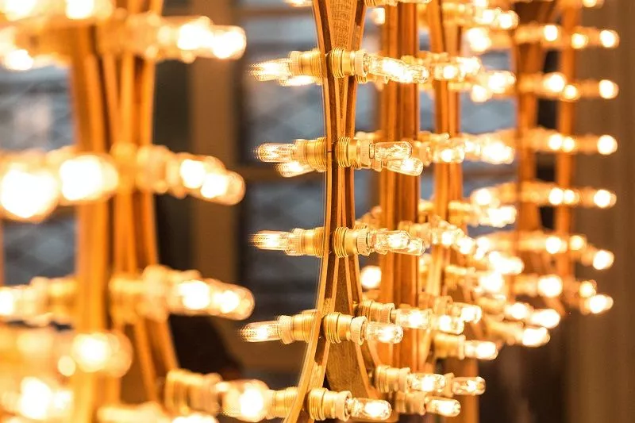
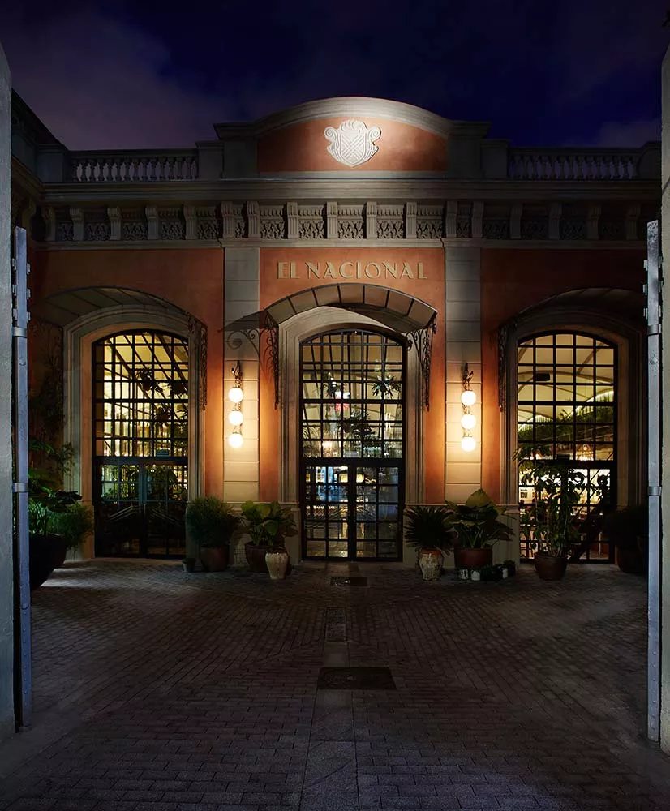